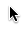

Omnisequences are keyboard sequences which you can customize. Are you one of those who type 'gi' and expect to be
taken to home page of a site or press 'j', 'k' to navigate
between the posts ? If 'yes' this addon is for you, you can skip to next section. Did you say 'no'? dont worry you
are about to find out
an awesome way to navigate web sites using keyboard without mouse. Keyboard sequences are different from keyboard
shortcuts, lets take
keyboard sequence 'gi', you type it by typing the first key 'g' followed by second key 'i', the catch is no need to
hold key 'g' while typing the key 'i'.
can there single key keyboard sequences? yes. you can even have a keyboard sequence 'o' to open the current
post/link you are in.
This is inspired by google shortcuts.
What can I do with omnisequences?
You can sequence anything that you can do manually in a website. Examples would be you can have a sequence to
navigate within the dom on identifiers - j,k,n,p
navigate across a site, go one level up, go to home page - u,gi
jump across sites, open new tab
jump to a particular post based on id - you can have a prompt inside the function to get input from
user.
attach new elements/styles/scripts to a page - you can attach jquery on the fly to a page.
let your imagination rule the world :)
When are the keys captured for sequence ?
The keys are captured for sequence when any input/texfied is not in focus. You can press Esc key to
blur / come out of input/textfield in focus.
Esc key can also be pressed to reset the keys captured for sequence. Say you have entered 'g' but want to
type 'u', you can press Esc key to clear the keys captured for sequence. You can see the keys being captured
in the addons bar.
Where is the config panel ?
Config panel is accessible through the widget in the Add-on Bar. To view addons bar press 'Ctrl + /' or
View->Toolbars->Add-on Bar.
How do i create a keyboard sequence ?
key 1key 2matchersfunctioncache

click on
Enter key 1 for the sequence, the focus automatically moves to key 2 after you enter key 1.
Enter key 2 for the sequence (optional), the focus automatically moves to key 2 after you enter key 1.
Enter the matchers for the elements to iterate (optional).
Select one of the fuctions.
demo
What are matchers ?
Matchers are comma seperated list of selectors. For example, #search,#q,.searchField,.find,div -
matches element with id "search" or "q" or with class "searchField" or "find", all divs.
Visit http://api.jquery.com/category/selectors/ for more
details on selectors. The matching elements are passed as the argument to function thus enabling the reuse of
functions.
What is a function ?
Function is the one that is invoked with matchers elements as argument when the key sequence is presesed. You can
select on of the existing fuctions or create your own function.
How to create a custom function ?
function-Namefunction-definition
click on
Enter the fuction name, the function will be available in the drop down after this.
Update the function template to do what you want. The matches is the jquery resut of $(matchers)
demo
What are 'Apply to' and 'Dont Apply To'? Or how to filter the rules ?
Rules can filtered (filter the site to which they apply to) by combination of Apply To and Dont Apply
To patterns. There can be mutiple Apply To and Dont Apply To patterns. The rules are applied if
they match atleast one pattern in Apply To set and dont match any pattern in Dont Apply
To.
How to create a pattern ?
key 1key 2matchersfunctioncache
Enter the pattern in
Select the type of filter 'Apply To' or 'Dont Apply To' from the drop down.
Click on
demo
What is a pattern ?
Pattern is a sequence of characters possibly with wild card to be compared againt a url. *worpress.com*,
http://* are examples of pattern. * matches anything.
*wordpress.com will match http://jsrulestheworld.wordpress.com, https://securejsrulestheworld.wordpress.com but not
http://jsrulestheworld.wordpress.com/ or http://jsrulestheworld.wordpress.com/page1
Empty Apply To pattern defaults to *.
What are rule sets and why we need them?
Rules sets are set of rules, with their own keyboard sequences, filter patterns. To add rule set click on . They can be used to
group keyboard sequences of a type together, override certain keyboard shortcut for a site/collection of sites.
How to override the keyboard sequence for a particular page/site?
key 1key 2matchersfunctioncache
key 1key 2matchersfunctioncache
Keyboard sequence can be overridden by creating a rule set with an Apply To pattern that is longer that the
previous Apply To patterns.
When the user visits http://addons.mozilla.com/someNotOverriddenPage the keyboard sequences in the page will
be
gi - goToHomePage
j - goToNextMatch
u - goOneLevelUp
but when the user visits http://addons.mozilla.com/latestUpdates the keyboard sequence in the page will be
gi - goToHomePage
j - goToNextMatch
u - updateCurrentPage
Notice how http://addons.mozilla.com/latestUpdates gets 'gi', 'j' as is from 'rule set one' but 'u' is
overriden by definition in 'override u'.
function-Namefunction-definition
How can i see the list of sequences active in a particular page ?
You can press the sh keys to see the list of sequences active in the current page.
Where can I add my custom rules ?
Its recommended to add the custom rules to your custom rule set because the add on update would replace the default
rule set. Its also recommended to add custom functions and not edit existing functions.